|
Ritorna all'indice delle parrocchie
Il numero abbinato ad ogni famiglia indica la relativa posizione nello Stato delle Anime
1 - Prete Camillo Ricci - Paroco di questa Chiesa
2 - Nardi Pietro - proprietario di terreni lavora nel suo - 16
3 - Bianchini Giuseppe - mezzaiolo
4 - Fuochi Michele - mezzaiolo
5 - Togniazzi Francesco - mezzaiolo
6 - Galantini Bastiano - mezzaiolo
7 - Ticci Stefano - mezzaiolo
8 - Fosi Marco - mezzaiolo
9 - Bandi Antronio - mezzaiolo - 13
10 - Rosi Bennardino - mezzaiolo
11 - Cortecci Giovanni Battista - mezzaiolo
12 - Lorenzetti Vitale - mezzaiolo
13 - Bartali Giacomo - mezzaiolo
14 - Vetturini Francesco - n.d.
15 - Testi Domenico - mezzaiolo
17 - Corsi Giovanni - mezzaiolo
18 - Mariani Pietro - mezzaiolo
19 - Bacchini Bennardino - mezzaiolo
20 - Cubattoli Stefano - mezzaiolo
21 - Borghi Lorenzo - mezzaiolo
22 - Falai Giovanni - mezzaiolo
23 - Laghi Mattio - mezzaiolo
24 - Franci Giulio - mezzaiolo
25 - Bailetti Francesco - mezzaiolo
26 - Vacchi Giuseppe - mezzaiolo
27 - Tani Pietro - mezzaiolo
28 - Gabrielli Giovanni Battista - fittuario di terreni lavora nei detti terreni
29 - Mecatti Giovanni - mezzaiolo
30 - Papi Pietro - pigionale ed affittuario di terreni lavoratore nei detti terreni
31 - Burroni Pietro - fa il treccolone
32 - Burroni Cipriano - fa il vetturale ed è pigionale
33 - Marchetti Francesco - è pigionale va ad opera nelle terre degli altri
34 - Ricci Jacomo - pigionale va a opera nelle terre degli altri
35 - Pepi Niccolò - pigionale ortolano giubilato dalla infrascritta Certosa è impotente
36 - Mori Francesco - pigionale lavoratore di terra per opera ad altri
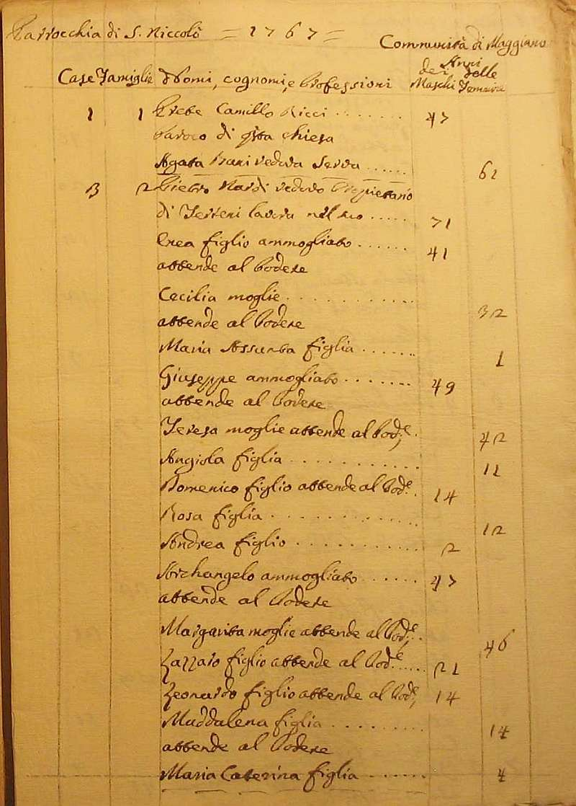
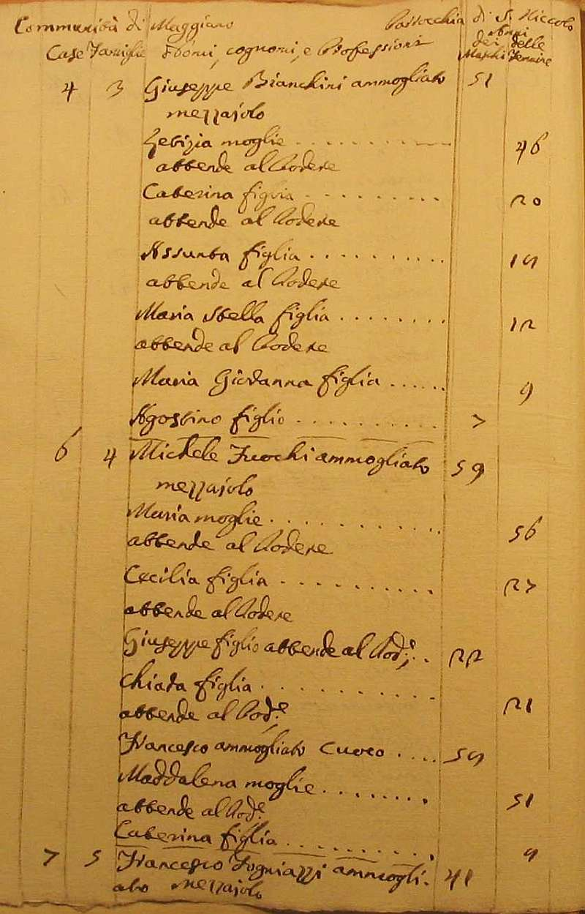
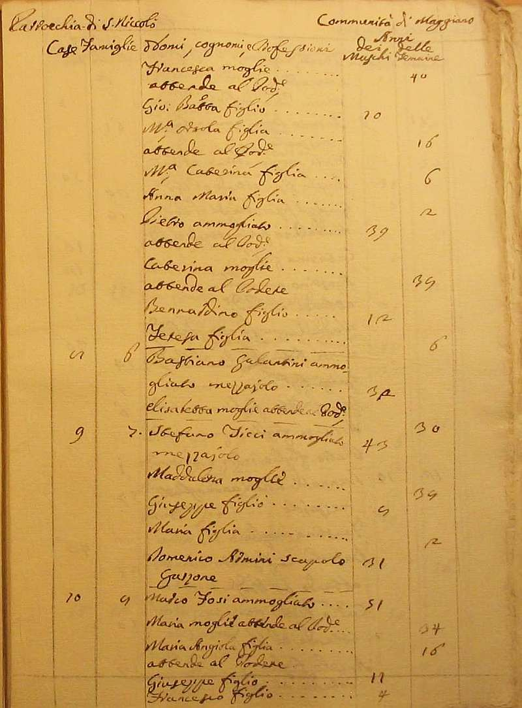
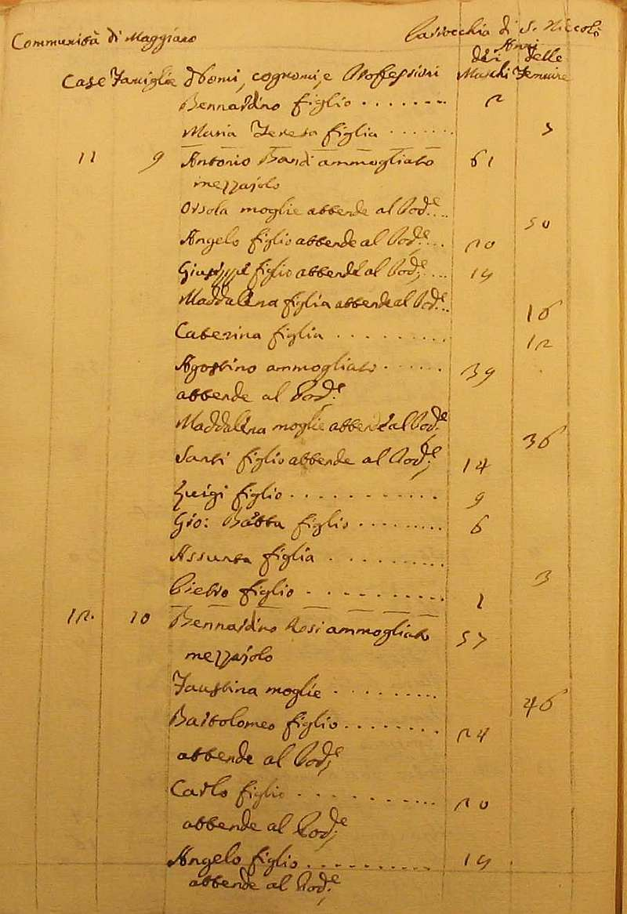
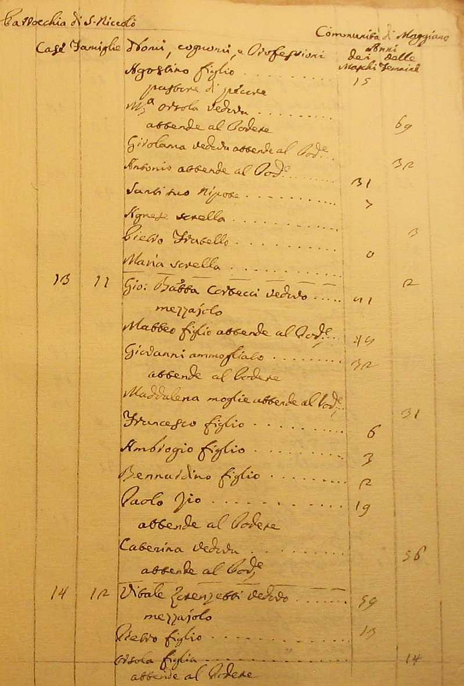
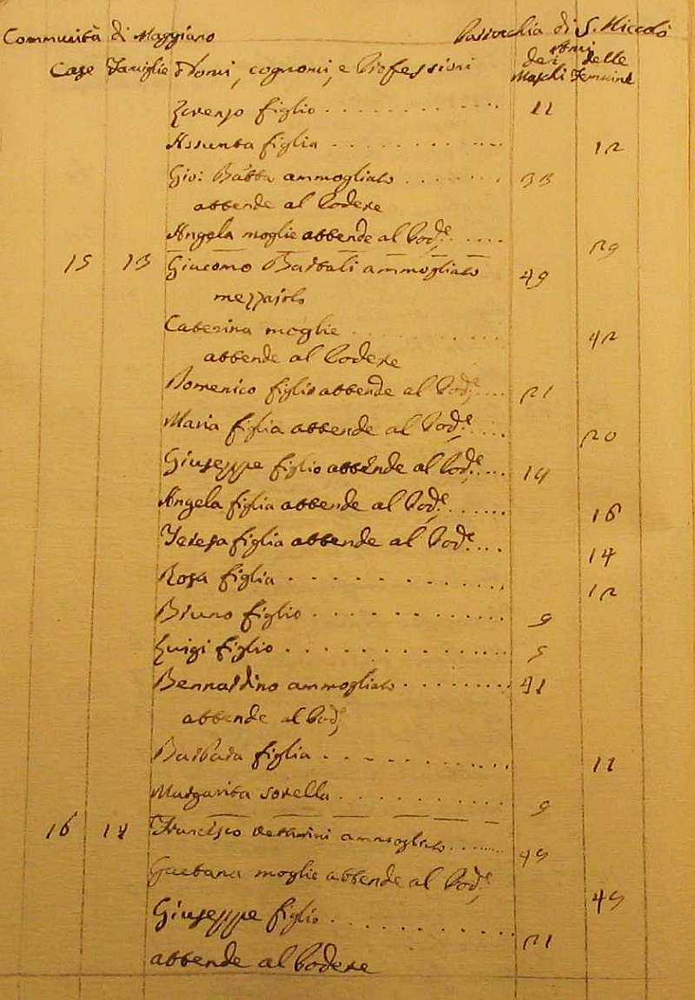
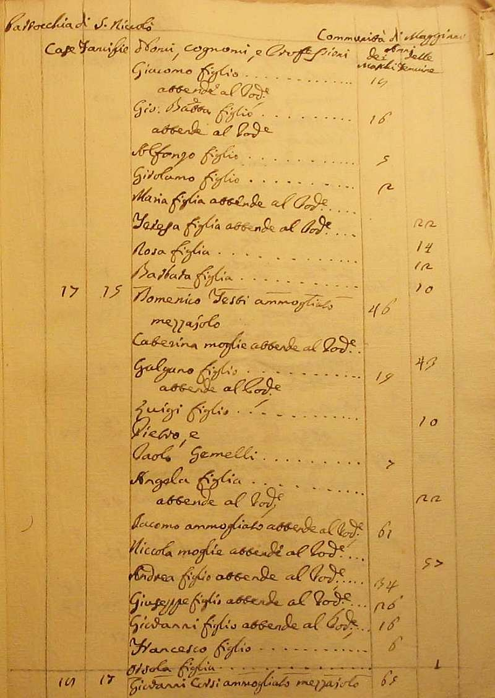
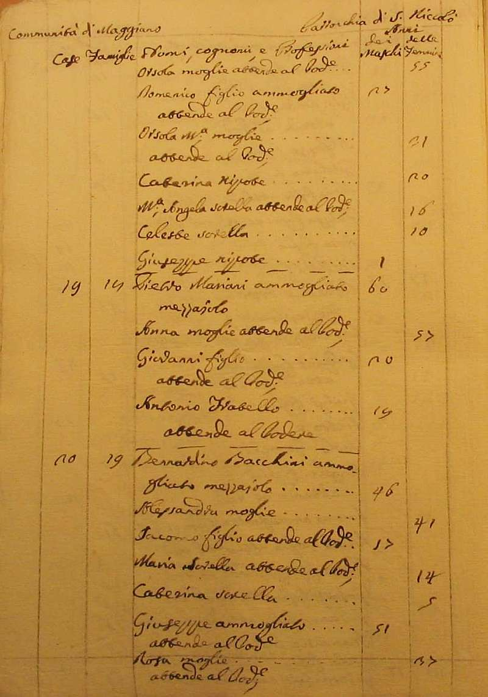
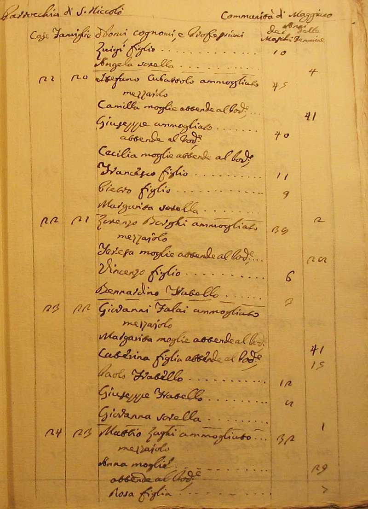
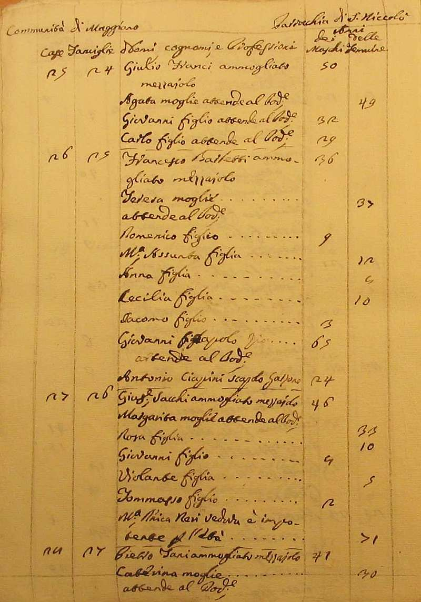
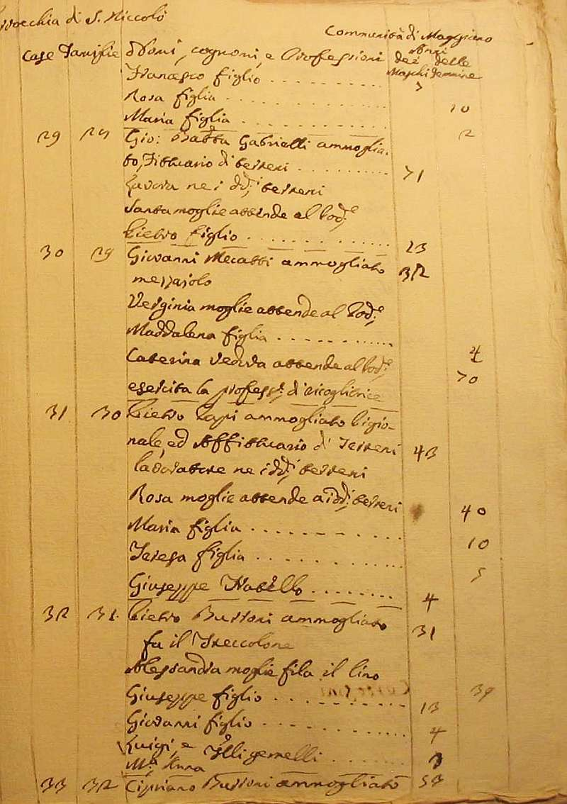
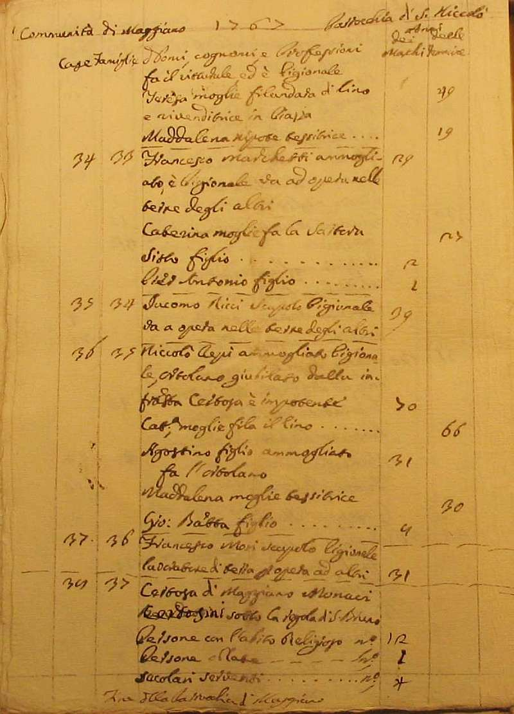
Torna ad inizio pagina
Ritorna all'indice delle parrocchie
| |

|